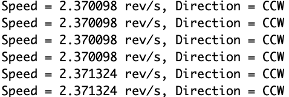
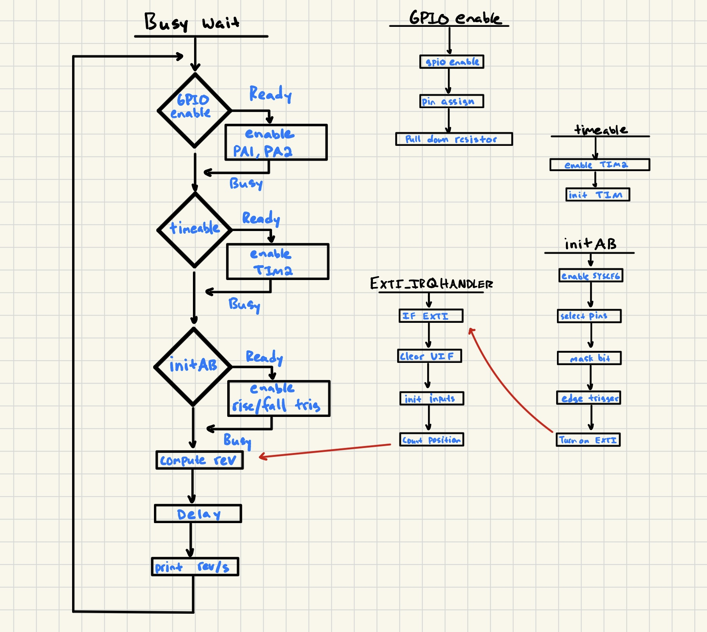
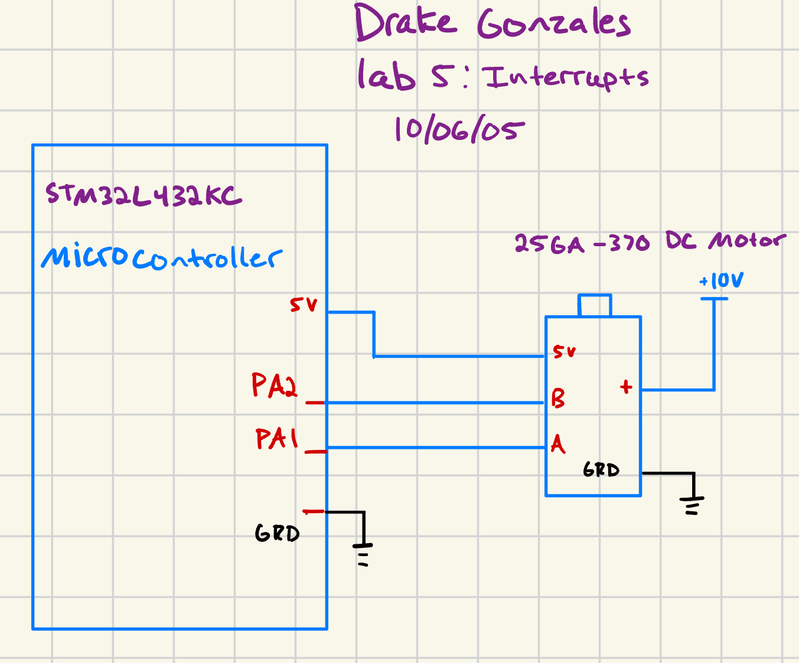
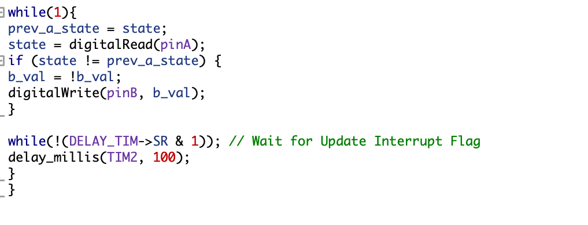
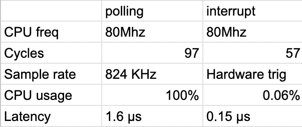

Lab 5 Interrupts
Introduction
In this lab, a design was made to use a microcontroller to determine the speed of a brushed DC motor by reading a quadrature encoder using interrupts. To do this, code was written in C to sense quadrature encoder pulses, and in turn, turn those pulses into motor velocities. The function of a quadrature encoder is to use an incremental motion sensor that uses two output signals offset by 90 degrees to provide both positional and directional information for a motor. An animation of an encoder can be see below.

Above is the quadrature encoder used for this lab. The disk rotates with the motor.
The design was developed using C on SEGGER, and implemented on an STM32L432KC Microcontroller.
Technical Documentation
The source code for this lab can be found in this GitHub repo.
The documentation for the STM32L432KC manual Github link.
The source Instruction to cycles documentation ARM website.
Equations
The only equations applicable to this lab are the ones used to calculate how many edges to account for. The equation used was:
revolutions = position (1000/timer) / (4 x 408)
This equation multiplies the encoder count (position counter) by the sampling rate (samples per second), then divides by the total number of quadrature edges per revolution.
An example of this equation in the works can be seen below. Below is an osilliscope frame of the output of the B encoder. This occured at 10V input into the motor.

Each square wave period corresponds to one pulse of the encoder signal. The frequency of these pulses increases with motor speed, which is directly controlled by the input voltage.
We know that f = 1/T -> 970Hz
Using the relationship between speed, frequency, and PPR we get:
speed (rev/s) = f / PPR -> 2.37 rev/s
When comparing this to the actual value measured by our interrupts, we can see the same value. As seen below:

Above are the values that we were getting from our debug terminal from our interrupt code. These values, when compared to our theoretical values, are within a 1% margin. Thus validating the output coming from our code.
Flowchart
Below is my logic flowchart for this lab. It features important calls to certain functions, and goes through the flow for the main loop within this design.

Figure 4 shows the functions: main, initAB, GPIOenable, timeable, and the interupt handler EXTI_IRQHandler.
Wiring Schematic

Above pictures the electrical circuit for our design. It portrays all electrical components used for the design. The design was pretty straightforward, just ensure to use the correct 5V input pins. Most of the pins on the STM32L432KC are only 3.3 logic input.
Results
The results of this lab were a success. The MC correctly recorded the rev/s of the motor for low and high speeds using interupts and timers. Two interupts were used for each edge of the encoder (A and B), and a timer was used for the 1/2 second delay for the display.
Interrupt vs polling
Before this lab I thought that polling would be a more efficient option compared to anything else. Polling is just something that I was used to when doing Systemverilog, or Python, however I think the difference between interrupts and polling is huge. To reinstate their overall differences:
Interrupts are a hardware-driven mechanism that temporarily pause the CPU’s current task to handle a specific event (such as a GPIO input change). Once the interrupt service routine (ISR) finishes executing, the CPU returns to its previous task. This approach can be more efficient because the CPU only reacts when needed, reducing unnecessary processing and potentially lowering power consumption.
Polling, in contrast, continuously checks the status of an input in a loop. The CPU repeatedly reads the GPIO pin and processes the data even if nothing has changed. This method is simpler to implement but uses more CPU time and power since the processor is always active and waiting for pins to go high or low.
Mathematically, their difference can be represented by the following:
To analyze polling for this lab, we consider reading a GPIO pin continuously and executing a conditional statement on each iteration. We also write this value. The example polling file can be seen below:

To be able to tell how fast this polling occurs we need to seperate this code into instructions, then estimate how many cycles per instruction there are to be able to decide the overall frequency of the while loop. The assembly instruction for the code above can be found below. Given by SEGGER.

Above is the general instructions for the code given. However it does not include the instructions for the called functions. Those, however WERE included in the calculation.
However we need to know how many individual cycles for each instruction we have so we can calculate how many instructions total. The link above in the Technical Documentation tab is from the ARM website for the CORTEX M-4. ARM, the designer for the CORTEX M-4 series, documented how many cycles for each instruction.
From this, we can calculate how many cycles our whole polling code takes.
This number comes out to around 97 cycles in the condition that each branch instr is 2 cycles, and that we did not include the delay_millis or the while (UIF).
Back to our earlier calculations, we find the frequency of polling using a CPU freq of 80 Mhz.
f = (CPU freq) / cycles -> 824,742.268 Hz
With a period of:
t (latency) = 1/f -> 1.21 μs
In the polling approach, the CPU executes the GPIO read loop continuously, using nearly 100% of processing time, even when no edges occur.
Comparing this to interrupt, the same steps were completed as before. Below is the assembly instructions used.

The cycles calculated were 57 cycles with 408 * 2 edges (we are only utilizing one encoder, but both edges) (We arent counting direction)
Each encoder edge triggers an interrupt, so the CPU only does work when an event occurs.
CPU time = (57 * 816) / CPU freq -> 0.058 %
So interrupts only use 0.058% of CPU time when counting up to 1 full revolution, leaving the other 99.95% for other tasks.
The latency for the interrupts is 12 cycles which can be found here: Cortex-M4 Technical Reference Manual
The interrupt hardware latency, i.e., the time from the encoder edge to the first instruction of the ISR, is:
t (latency) = 12/ CPU freq = 0.15 μs
Thus, compared to polling, interrupts significantly reduce CPU usage while providing near-instantaneous response to encoder events.
At higher speeds the encoder can generate edges faster than the polling loop can check them. Thus, some edges may be missed because the CPU hasn’t completed the current loop iteration. However when running interrupts they are event-driven, so each encoder edge triggers the ISR immediately, regardless of overall motor speed.
Below is a summary table of the mathematical differences between the two.

Conclusion
The design was a success uploaded for this lab was a success. The STM32L432KC correctly took the input from the encoder, and provided speed and directional data. This lab was done using the CMSIS code provided by STM unlike lab 4. This made the code more structured and provided more readability for the reader.
This Lab took 8 hours.
Suggestions
Go through and understand each CMSIS file, and understand the stm32L4xxx header file.
AI Prototype
This is the AI prototype for this lab. The prompt that was ran through Claude AI was:
Write me interrupt handlers to interface with a quadrature encoder. I’m using the STM32L432KC, what pins should I connect the encoder to in order to allow it to easily trigger the interrupts?
The code that was produced as a result was :
/ Quadrature Encoder Interface using TIM2 on STM32L432KC * Encoder connections: * Channel A -> PA0 (TIM2_CH1) * Channel B -> PA1 (TIM2_CH2) */
#include “stm32l4xx_hal.h”
TIM_HandleTypeDef htim2; volatile int32_t encoder_count = 0; volatile int32_t encoder_overflow = 0;
/* Initialize encoder interface */ void Encoder_Init(void) { GPIO_InitTypeDef GPIO_InitStruct = {0}; TIM_Encoder_InitTypeDef sEncoderConfig = {0}; TIM_MasterConfigTypeDef sMasterConfig = {0};
/* Enable clocks */
__HAL_RCC_GPIOA_CLK_ENABLE();
__HAL_RCC_TIM2_CLK_ENABLE();
/* Configure GPIO pins PA0 and PA1 for TIM2 encoder input */
GPIO_InitStruct.Pin = GPIO_PIN_0 | GPIO_PIN_1;
GPIO_InitStruct.Mode = GPIO_MODE_AF_PP;
GPIO_InitStruct.Pull = GPIO_PULLUP;
GPIO_InitStruct.Speed = GPIO_SPEED_FREQ_HIGH;
GPIO_InitStruct.Alternate = GPIO_AF1_TIM2;
HAL_GPIO_Init(GPIOA, &GPIO_InitStruct);
/* Configure TIM2 in encoder mode */
htim2.Instance = TIM2;
htim2.Init.Prescaler = 0;
htim2.Init.CounterMode = TIM_COUNTERMODE_UP;
htim2.Init.Period = 0xFFFFFFFF; // 32-bit counter
htim2.Init.ClockDivision = TIM_CLOCKDIVISION_DIV1;
htim2.Init.AutoReloadPreload = TIM_AUTORELOAD_PRELOAD_DISABLE;
/* Encoder configuration: count on both edges of both channels */
sEncoderConfig.EncoderMode = TIM_ENCODERMODE_TI12;
sEncoderConfig.IC1Polarity = TIM_ICPOLARITY_RISING;
sEncoderConfig.IC1Selection = TIM_ICSELECTION_DIRECTTI;
sEncoderConfig.IC1Prescaler = TIM_ICPSC_DIV1;
sEncoderConfig.IC1Filter = 10; // Input filtering
sEncoderConfig.IC2Polarity = TIM_ICPOLARITY_RISING;
sEncoderConfig.IC2Selection = TIM_ICSELECTION_DIRECTTI;
sEncoderConfig.IC2Prescaler = TIM_ICPSC_DIV1;
sEncoderConfig.IC2Filter = 10;
if (HAL_TIM_Encoder_Init(&htim2, &sEncoderConfig) != HAL_OK)
{
Error_Handler();
}
sMasterConfig.MasterOutputTrigger = TIM_TRGO_RESET;
sMasterConfig.MasterSlaveMode = TIM_MASTERSLAVEMODE_DISABLE;
if (HAL_TIMEx_MasterConfigSynchronization(&htim2, &sMasterConfig) != HAL_OK)
{
Error_Handler();
}
/* Set counter to middle value to allow bidirectional counting */
__HAL_TIM_SET_COUNTER(&htim2, 0x7FFFFFFF);
/* Enable update interrupt for overflow/underflow detection */
__HAL_TIM_ENABLE_IT(&htim2, TIM_IT_UPDATE);
/* Configure NVIC */
HAL_NVIC_SetPriority(TIM2_IRQn, 0, 0);
HAL_NVIC_EnableIRQ(TIM2_IRQn);
/* Start encoder interface */
HAL_TIM_Encoder_Start(&htim2, TIM_CHANNEL_ALL);}
/* TIM2 interrupt handler */ void TIM2_IRQHandler(void) { if (__HAL_TIM_GET_FLAG(&htim2, TIM_FLAG_UPDATE) != RESET) { if (__HAL_TIM_GET_IT_SOURCE(&htim2, TIM_IT_UPDATE) != RESET) { __HAL_TIM_CLEAR_IT(&htim2, TIM_IT_UPDATE);
/* Check direction to determine overflow or underflow */
if (__HAL_TIM_IS_TIM_COUNTING_DOWN(&htim2))
{
encoder_overflow--; // Underflow
}
else
{
encoder_overflow++; // Overflow
}
}
}}
/* Get current encoder position */ int32_t Encoder_GetCount(void) { int32_t cnt = (int32_t)(__HAL_TIM_GET_COUNTER(&htim2)) - 0x7FFFFFFF; return cnt; }
/* Get absolute position including overflows */ int64_t Encoder_GetAbsoluteCount(void) { int32_t cnt = Encoder_GetCount(); int64_t total = ((int64_t)encoder_overflow << 32) + cnt; return total; }
/* Reset encoder count */ void Encoder_Reset(void) { __HAL_TIM_SET_COUNTER(&htim2, 0x7FFFFFFF); encoder_overflow = 0; }
/* Get encoder direction (1 = forward, -1 = reverse, 0 = stopped) */ int8_t Encoder_GetDirection(void) { if (__HAL_TIM_IS_TIM_COUNTING_DOWN(&htim2)) return -1; else return 1; }
/* Example usage in main */ int main(void) { HAL_Init(); SystemClock_Config();
Encoder_Init();
while (1)
{
int32_t position = Encoder_GetCount();
int8_t direction = Encoder_GetDirection();
// Use encoder data here
HAL_Delay(10);
}}
/* Weak error handler - implement your own */ __weak void Error_Handler(void) { __disable_irq(); while (1) { } }
/* Weak system clock config - implement based on your setup */ __weak void SystemClock_Config(void) { // Configure your system clock here }
Related questions:
How would you rate the quality of the output and why?
I think the output produced is a little confusing. It has overall weird syntax that have not seen regarding the stm32Lxxx.h header. One example of this can be seen in ‘HAL_TIM_Encoder_Start(&htim2, TIM_CHANNEL_ALL);’. Almost everywhere in the code i see the ‘HAL’ notation but i am quite unsure what this notation means.
Did the LLM generate any code for you? If so, how does it compare to your setup?
Like explained above, it uses irregular syntax from what I am used to. This caused me to be confused. This syntax might be correct however as I dont know the full extent to the stm32L4xxx header.
How does the LLM’s explanation compare to your reasoning for choosing your timer?
The same timer was chosen. This is just one of the basic overall timers used within the STM32.
Does the LLM work well as a sounding board, rather than a code generator as used in previous prototypes?
I think the LLM works well in giving you overall strcuture for the code and giving you the overall idea of what your code should generally look like. This can be important in fomrulating ideas, but is bad if you dont know where to look for the correct functions within the header file.